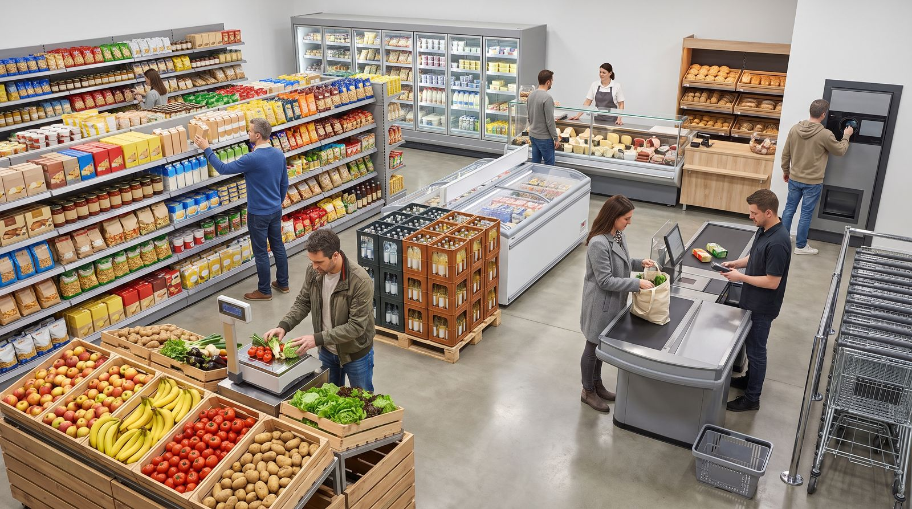

deutschoderwas · Sprachspielclub · 12. September 2026 · ab B1
Ab in den Supermarkt
Heute gehen wir gemeinsam durch die Gänge: vom Einkaufswagen über die Frischetheke bis zum Pfandautomaten. Wir üben Wortschatz, Wechselpräpositionen und typische Gespräche an der Kasse — und am Ende wartet das große Quiz mit zehn Runden.
Beschreiben Sie so genau, dass die anderen das Bild vor sich sehen. Also nicht „da ist Obst“, sondern „links vorne steht eine flache Kiste mit grünen Äpfeln, direkt darüber hängt eine Waage mit vielen Tasten“.

💡 Erste Runde: Jede Person sucht sich eine Ecke des Bildes aus und erzählt eine Minute lang, was dort passiert. Die anderen dürfen danach genau zwei Fragen dazu stellen. Wer nichts mehr findet, gibt weiter.
Findet diese Sachen
Tippt ein Wort an, wenn ihr es gefunden und die Lage beschrieben habt: So klingt eine gute Lagebeschreibung: „Der Pfandautomat steht rechts neben dem Eingang, gleich hinter den gestapelten Kästen.“
0 von 28 gefunden
Die Wörter dazu
Sagt jedes Wort laut — und gleich den ganzen Beispielsatz dazu. Der Artikel gehört immer mit dazu.
💡 Spiel dazu: Verdeckt die Wörter. Eine Person beschreibt eine Karte in drei Sätzen, ohne das Wort zu nennen — die anderen raten. Tippt auf eine Karte, um sie einzeln aufzudecken.
🎁 „Ich sehe etwas, das …“
Eine Person zieht ein geheimes Wort aus dem Bild und beschreibt nur mit Präpositionen, wo es ist — die anderen raten, was es ist!
🤫 Dein geheimes Wort
Bereit?
Beschreibe seine Lage — aber sag das Wort nicht!
🗣️ So beschreibst du: „Es befindet sich …“ · „Es liegt / steht / hängt …“ + Präposition + Dativ.
🏆 Spielregeln: Nenne mindestens zwei Präpositionen, bevor die anderen raten dürfen. Wer richtig rät, bekommt einen Punkt und ist als Nächstes dran.
📍 Neun Präpositionen, zwei Fragen. Wo? fragt nach der Lage — dann kommt der Dativ. Wohin? fragt nach der Richtung — dann kommt der Akkusativ. Dieselbe Präposition, zwei Fälle.
Wo? → Dativ
Die Sache ist schon da und bewegt sich nicht. Bildet zu jeder Präposition einen eigenen Satz zum Bild.
in
„Die Milch steht im Kühlregal ganz hinten links.“
an
„An der Theke warten schon drei Leute auf frischen Käse.“
auf
„Auf dem Band liegt der Warentrenner der nächsten Kundin.“
unter
„Unter dem Einkaufswagen liegt eine Packung Nudeln, die jemand verloren hat.“
über
„Über dem Gang hängt ein großes Schild mit der Nummer vier.“
neben
„Neben der Kasse hängen die Tüten, die Geld kosten.“
vor
„Vor dem Pfandautomaten hat sich eine kleine Schlange gebildet.“
hinter
„Hinter der Kasse sitzt ein Kassierer und scannt die Waren ein.“
zwischen
„Zwischen den Regalen ist der Gang so eng, dass zwei Wagen kaum aneinander vorbeikommen.“
🧠 Dativ-Artikel: der → dem · das → dem · die → der · Plural → den (+n).
Wohin? → Akkusativ
Etwas bewegt sich irgendwohin. Achtet auf das Verb: gehen, legen, stellen, werfen — das sind die Verräter.
in + Akk.
„Ich lege die Äpfel in den Einkaufswagen.“
auf + Akk.
„Er legt den Warentrenner auf das Band, damit nichts durcheinandergerät.“
an + Akk.
„Wir stellen uns an die Kasse an, weil dort niemand steht.“
unter + Akk.
„Sie schiebt den Kasten Wasser unter den Wagen.“
über + Akk.
„Der Kassierer zieht die Milchpackung über den Scanner.“
hinter + Akk.
„Ich stelle das Leergut hinter die Tür, damit ich es morgen mitnehme.“
🧠 Akkusativ-Artikel: der → den · das → das · die → die · Plural → die. Merksatz: Wo? = Dativ (es ist schon da) · Wohin? = Akkusativ (es bewegt sich dorthin).
🎲 Spiel dazu: Eine Person sagt einen Satz mit Wo?, die nächste macht daraus einen Satz mit Wohin?. Wer den Fall verwechselt, gibt weiter.
🔤 Tabu
Erkläre das Wort oben — aber ohne die verbotenen Wörter zu benutzen! Die anderen raten. Tipp: Fang mit „Das ist ein Ort, an dem …“ oder „Das braucht man, wenn …“ an.
⏱️ Spielidee: 60 Sekunden pro Runde. Für jedes erratene Wort gibt es einen Punkt. Benutzt jemand ein verbotenes Wort, ist die Karte futsch. Zwei Teams treten gegeneinander an!
🗣️ Frei sprechen
Sprecht frei — nutzt den Wortschatz aus dem Bild.
Erinnerung
Woran erinnern Sie sich, wenn Sie an Ihren ersten eigenen Einkauf denken? Wie alt waren Sie, was sollten Sie besorgen — und hat alles geklappt?
Beschreiben
Beschreiben Sie Ihren Lieblingssupermarkt so genau, dass die anderen ihn sich vorstellen können: Wie sind die Gänge angeordnet, wo steht das Kühlregal, wo die Theke?
Vergleich
Was ist beim Einkaufen in Deutschland anders als in Ihrem Herkunftsland? Nennen Sie zwei Unterschiede, die Sie am Anfang überrascht haben.
Regeln
Welche ungeschriebenen Regeln gelten an der deutschen Supermarktkasse? Was sollte man auf keinen Fall tun, wenn man keinen Ärger will?
Kultur
Sonntags haben die Supermärkte geschlossen — außer an Bahnhöfen und Flughäfen. Wie erklären Sie das jemandem, der neu in Deutschland ist? Finden Sie die Regelung sinnvoll?
Geschichte
Erzählen Sie von einem Einkauf, der schiefgegangen ist: falsche Ware, zu wenig Geld, ein Missverständnis an der Kasse. Wie ging die Geschichte aus?
Diskussion
Wie viel Verantwortung tragen Supermärkte dafür, dass weniger Lebensmittel weggeworfen werden? Und wie viel tragen wir als Kundinnen und Kunden?
Streit
Eigenmarke oder Markenprodukt: Zahlt man bei der Marke vor allem für den Namen, oder schmeckt und hält das teurere Produkt wirklich mehr aus? Beziehen Sie klar Position.
🔑 Redemittel fürs Bild: „Ganz vorne / hinten sieht man …“ · „Direkt daneben …“ · „Mitten im Bild / in der Ecke …“ · „Links / rechts von … befindet sich …“ · „Im Vordergrund / im Hintergrund …“
⚖️ Kleine Debatte
Sollten Supermärkte in Deutschland auch sonntags öffnen dürfen?
🛒 Sonntags öffnen
Wer die ganze Woche arbeitet, hat oft nur am Sonntag wirklich Zeit zum Einkaufen.
Alleinlebende und Familien mit Schichtdienst wären deutlich flexibler.
Der Samstag wäre entspannter, weil sich nicht alle an einem Tag drängen würden.
Andere Länder machen es seit Jahren vor, ohne dass die Gesellschaft daran zerbricht.
🥕 Sonntag bleibt frei
Der freie Sonntag schützt genau die Menschen, die im Handel arbeiten.
Ein gemeinsamer ruhiger Tag hat einen Wert, den man nicht in Umsatz messen kann.
Wer plant, schafft seinen Einkauf problemlos an sechs Tagen in der Woche.
Längere Öffnungszeiten bringen erfahrungsgemäß mehr Kosten, aber kaum mehr Umsatz.
So sagst du deine Meinung
Ich finde, …Für mich ist …Das mag sein, aber …Da bin ich anderer Meinung, weil …Genau das ist doch das Problem: …
🎲 So geht es: Zwei Gruppen. Jede bekommt eine Seite zugelost — auch die, die sie selbst nicht glaubt. Drei Minuten sammeln, dann abwechselnd sprechen, immer ein Satz.
🎬 Rollenspiele
Zieht eine Karte, verteilt die zwei Rollen und spielt die Szene zwei bis drei Minuten. Die Wörter unten dürfen — sollen! — vorkommen.
🗣️ Nach jeder Szene, ein Satz reihum: „Ich hätte an deiner Stelle gesagt: …“ — so hört ihr drei Varianten für dieselbe Situation statt nur einer.
🏆 Das große Quiz
Zehn Runden quer durch den Supermarkt: Wortschatz, Landeskunde, Grammatik und zum Schluss Redewendungen. Bei jeder Frage gibt es nur eine richtige Antwort — und wer sie begründen kann, gewinnt doppelt.
Runde 1 · Frage 10 von 6
🏅 Als Wettkampf: Zwei Teams, abwechselnd. Wer die richtige Antwort hat, muss zusätzlich einen eigenen Satz mit dem Wort bilden — erst dann gibt es den Punkt.